Intro to React
Part 1
Lecture 1: Frameworks/Libraries and Why React

JavaScript and Websites
A brief history
Web 1.0: JS for Almost Nothing

Web 2.0: JS for AJAX

Web Today: JS for Everything

Big JS Web Apps

What does the JS do?
- Fetches data
- Processes and calculates data
- Uses the DOM API to interact with HTML (like w/jQuery)
- Reacts to events
Use this tool!!!
Seriously, check it out
...that's a lot of JS.
Coursera: 28,848 lines of JS code..
Let's make it manageable
- Split into multiple files.
- Modularize the code into re-usable chunks.
- Use object-oriented concepts to organize code.
- Separate the code into "model" vs. "view"
Model vs. View
"Model"
(Data)
Fetch data
Process data
"View"
(Presentation)
Create UI
Handle DOM Events
Frameworks/Libraries
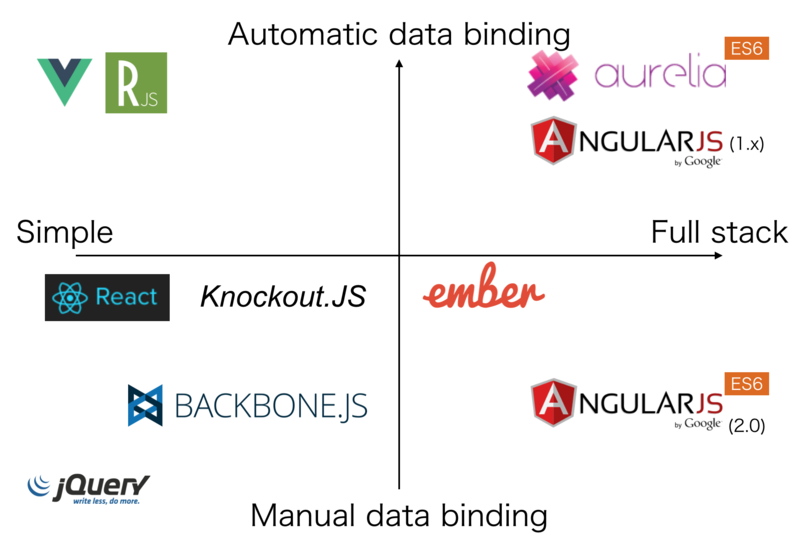Frameworks/Libraries
- MVC: Model View Controller (e.g. EmberJS, AngularJS)
- MVP: Model View Presenter (e.g. BackboneJS)
- MVVM: Model View ViewModel (e.g. KnockoutJS)
- MV*: Model View Something!
Why Can't I Use jQuery
The Old Way
Using jQuery or vanilla JavaScript we would:
- Write some HTML.
- In the JavaScript, write selectors for various buttons, form elements, and DOM elements that exist in the HTML.
- Listen for events on those elements - click, mouseover, scroll, double-click, keypress, etc.
- Write some code to react to those events - change the DOM as needed.
Disadvantages of the Old Way
- Gets complex pretty quickly
- Lots of forks - if/else if/else if/else
- Easy to introduce bugs
jQuery
- Importance of Managing Data Flows

Highlights
Lets read through this
Why React?
- Fun to use
- Lucrative
- Gives you a deep understanding of the issues facing the web
- Gives you a deep understanding of CS principles
- React Native!
Popular Frameworks
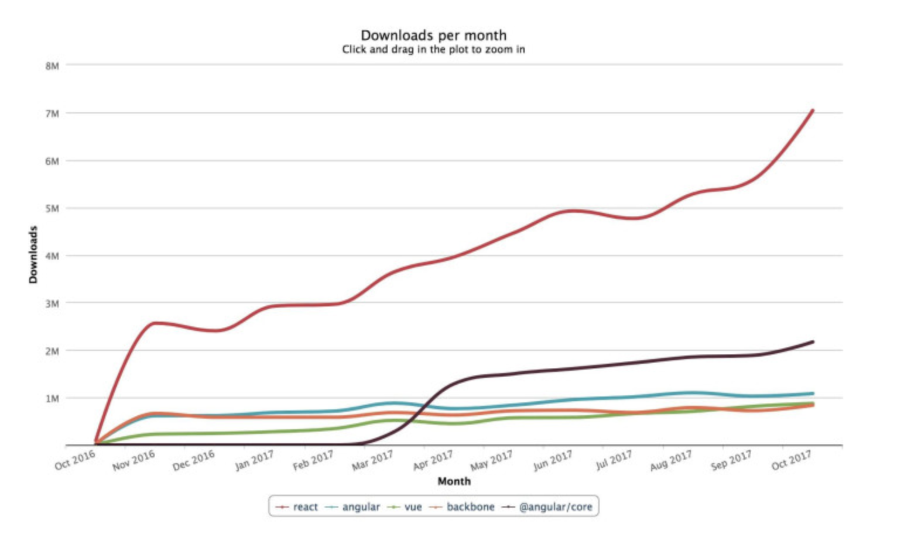What is React.js?
- React is a JavaScript library for building interactive UIs.
- It was created by Facebook.
- It is used by Netflix, Air Bnb, Instagram, and many, many others.
- Fast, efficient, and highly reusable code.
The React Way
- Made up of individual reusable components.
- Event handlers update the state.
- Components render and re-render as needed, based on the state.
- The library takes care of DOM updates using the virtual DOM.
Old Way

New Way

Lecture 2: NPM and Build Tools
You are more than your code
Ready to learn more?
What we will cover:
- Modules
- Packages
- NPM
- Build tools
Modules
A module is a JavaScript library/file that you can import into your code.
This can be third party code or code files within your project
//------ lib.js ------
export const sqrt = Math.sqrt;
export function square(x) {
return x * x;
}
export function diag(x, y) {
return sqrt(square(x) + square(y));
}
//------ main.js ------
import { square, diag } from 'lib';
console.log(square(11)); // 121
console.log(diag(4, 3)); // 5
ES6 Alert!
ES6 has a new way of creating modules in JavaScript, this is something that most languages have but JS has not taken advantage of until now.
ES6 modules have the same principle (ie having code in modules and then letting certain parts be accessed)
Visual Example: Importing and Exporting
Package vs Module
Difference between a module and a package?
A module is a single JS file that has some functionality and won’t impact other code in the rest of the application unintentionally.
A package is a directory with one or more modules inside of it and a package.json file that has information about the modules inside
Package.json
This is the main source of information for your project.
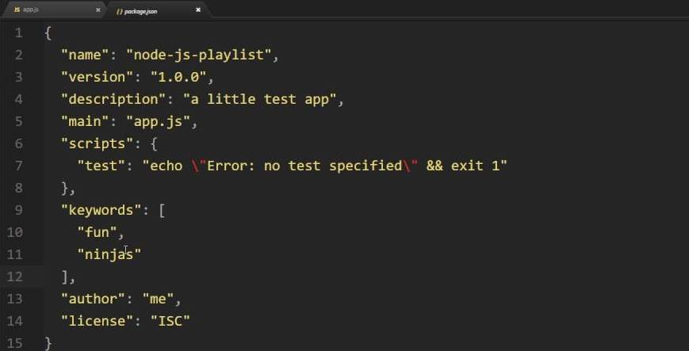NPM: Node Package Manager
Utility for downloading packages for your JavaScript projects
Can use to install front-end code, add dependencies, and build tools too!

Using NPM
Finding a project online or collaborating
- Clone the project that you want to work on with git (or sourcetree) and make sure it has a package.json
- Then navigate to directory that has the source code.
- Then type "npm install" in the Terminal. This will load your dependencies.
- Then run the "npm start" command. This will only work if the program you downloaded has a start script.
- List of shorthands
Exercise
Clone this repo, install npm, and start the npm scripts
Using NPM
Starting your own project
- Creating a package.json. This will track dependencies you are using in the project, and is an easy way to create scripts (instead of using tools like grunt and gulp)
- The command is "npm init" in the directory you want.
Adding a dependency
npm install --save [name-of-package]
Your list of dependencies
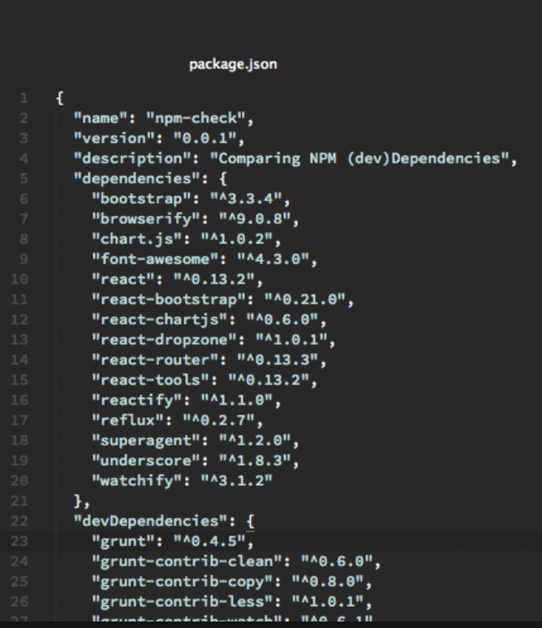Global Packages
A global package allows that package to be able to create commands that can be used in the command line (like yarn or npm or gulp). It can be used across your projectson your computer.
npm install -g [name-of-package]
Command for seeing the global packages on your computer: npm list -g --depth 0
Semantic Versioning
There is a structure to how developers keep track of the iterations of a package or dependency
Example: 1.8.3
- 1 is the "major version" and if this is updated, it will break currently functionality
- 8 is the "minor version" and usually indicates a new feature has been added but functionality is not changed.
- 3 is a patch or small fix.
Checking your versions
- The tilde (~) matches the most recent minor version (the middle number). ~1.2.3 will match all 1.2.x versions but will miss 1.3.0.
- The caret (^), on the other hand, is more relaxed. It will update you to the most recent major version (the first number). ^1.2.3 will match any 1.x.x release including 1.3.0, but will hold off on 2.0.0.
- "npm update" will update all of your dependencies that are compatible.
Difference between yard and npm
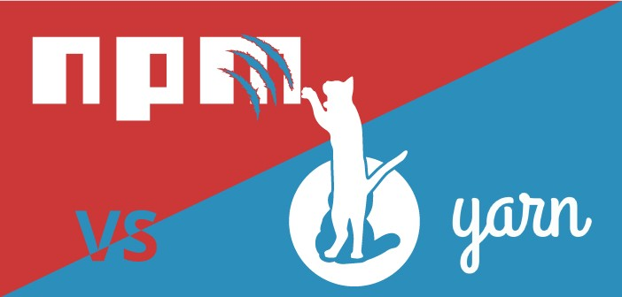Build tools
Build tools help you install tools, run code to help with develop, and helps get your code ready for production.
- Install things.
- Do things.
Build tools
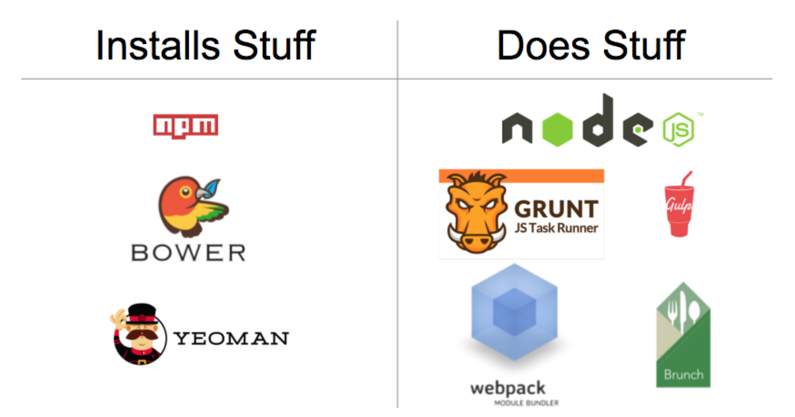Build tool tasks
- Creating folders and moving files into those folders
- Running a dev server
- Running unit tests with a single command
- Refreshing browser when I save a file
- Combining all JavaScript files into one, and all CSS files into one
- Minifying concatenated JavaScript and CSS files
- Modifying the placement of script tags on an html page
Build tools
A build is just a production ready version of your app
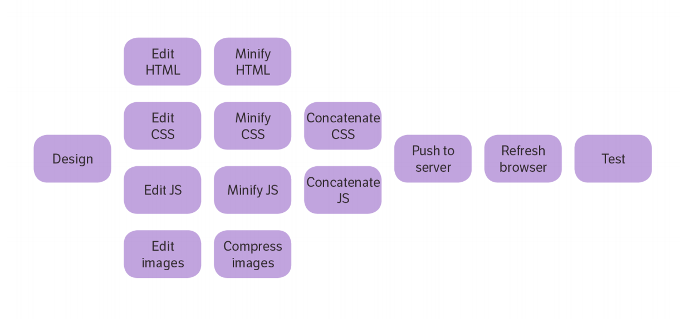Webpack
Learning about Webpack
Helpful ImageLet's talk through this
Webpack
A module bundler (at it's core)
But it also does a lot more!
More on webpack
here.A handy visual
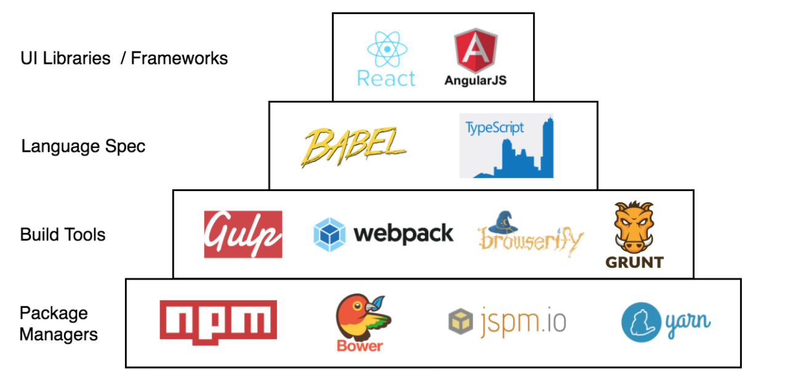A word on NPM scripts
You can use NPM scripts to run build commands, like starting a dev server and building production code.
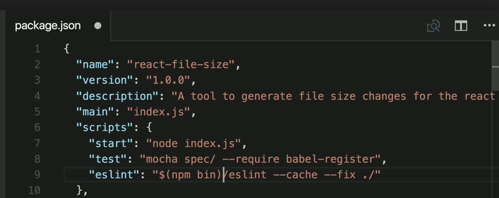 More here.Pluralsight Course
Setting up a JavaScript Build Environment
Everything you need to know from starting to deployment..
Click hereIs there an easier way?
Create-React-App
Facebook has made a handy tool to jumpstart your React App
npm create-react-app my-app-name
cd my-app
npm start
Let's do it
Folder Structure
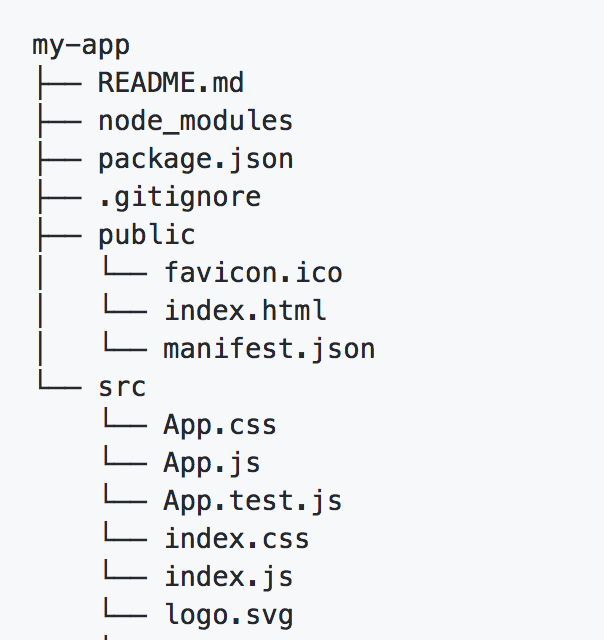Lecture 3
React Fundamental Principles
Components
- A self-contained and reusable bit of code
- One piece of a UI

Component Based Architecture
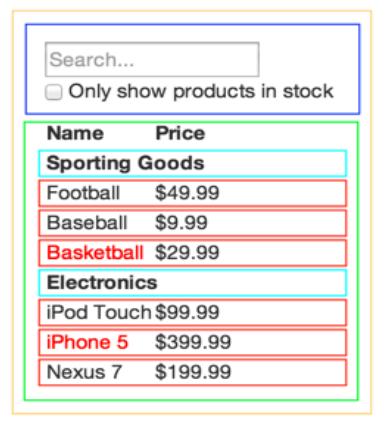Nesting Components
Components can be resuable as well as flow into each other.
Your entry file is the JS file that is the topmost component in the tree.
A Simple Component
import React, { Component } from 'react';
class HelloMessage extends Component {
render() {
return (
Hello World!
);
}
}
export default HelloMessage
Render
React components implement a render() method that takes input data and returns what to display. This example uses an XML-like syntax called JSX.
The render() function creates the UI
Other parts of the component interact with the data, add the styles (CSS), etc.
JSX
- A short-hand language that lets you create JavaScript objects using an HTML-like syntax.
- Generates JavaScript objects by matching HTML element names to components.
Example from live website.
JSX
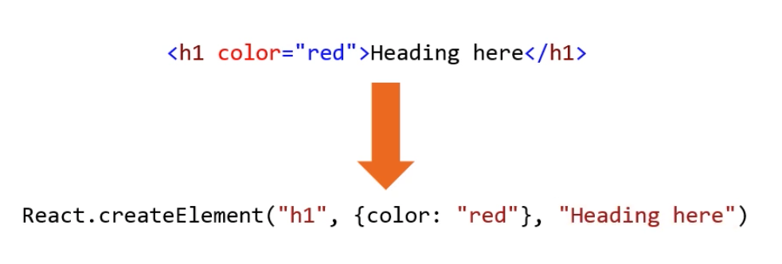Virtual DOM
- A JavaScript object
- Created by the library auto-magically
- An in-memory representation of DOM nodes and elements
- The library updates the virtual DOM - then updates the DOM only when necessary. Learn more

Virtual DOM
Virtual DOM
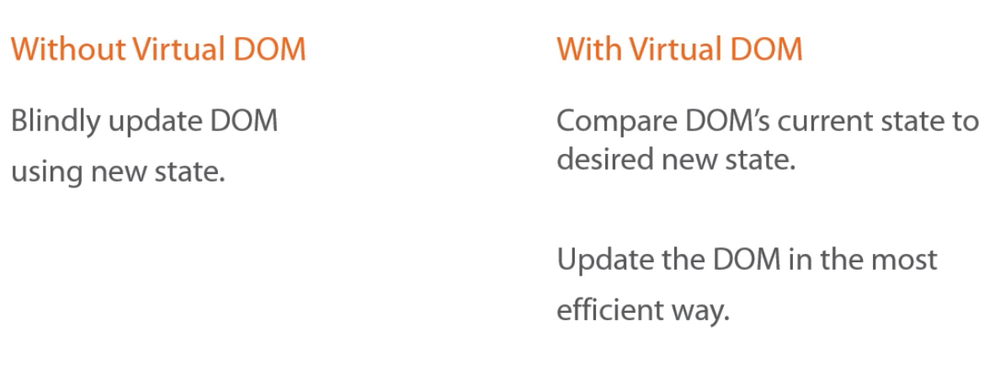More on the virtual DOM
click hereYour first React component
- Go to http://jsbin.com/gekozos/3/edit?html,css,js,output
- We’ll work together to make a component called
UserProfile. It should include:- An avatar
- Your first and last name
- Your favorite color
Avatar photo: https://randomuser.me/api/portraits/thumb/lego/8.jpg
Getting a component onto the page
ReactDOM.render
A library method that we will use to place components into our webpage
// The ReactDOM library provides an object 'ReactDOM' with a function 'render'
// It needs the component and the target in the DOM
ReactDOM.render(<MyReactComponent />, document.getElementByID('app'));
//This is generally all the HTML you will have!
JSX Gotchas
- Only one root element
- To insert evaluated JS, use
{}{12 + 4}{/* comment */}
- Special terms
- class: use
classNameto assign CSS classes
- class: use
- Learn more in the JSX docs
Props!
Props
A property of a component that does not change. It is generally "passed down" from a parent component.
import React, { Component } from 'react';
class HelloMessage extends Component {
render() {
return (
Hello {this.props.name}!
);
}
}
export default HelloMessage
Props
import React, { Component } from 'react';
import HelloMessage from './hellomessage'
class App extends Component {
render() {
return (
<HelloMessage name="Coach" />
);
}
}
export default App
Making Components Dynamic
- Components use ‘props’ or properties for dynamic bits of data and functionality.
- Props are expressed with the same syntax as HTML attributes, i.e.
name={someValue} - A prop can be set to any JS value
- String, Array, Object, Function, etc.
- Other React components
Another props example
// WelcomeText accepts the prop 'name'
<WelcomeText name={'Adam'} />
// WelcomeText component
class WelcomeText extends React.Component{
render (){
return (
<p>Welcome to the class, {props.name}!</p>
);
}
};
// will output
// <p>Welcome to the class, Adam!</p>
Intro to React
Part 2
Lecture 1
Objects, 'this', and ES6

Objects: A quick review
- What is an object?
- How do you make an object?
- Key/value pairs
- Adding methods to objects
What is an object?
- A way to describe concepts in an application or program.
- Customer
- Product
- Order
- A “thing” with properties and methods
- Properties describe the object
- Methods are things the object can do
How to make an object
With an object literal:
var contact0 = {
firstName: 'Simba',
lastName: 'The Lion',
organization: 'Pride Rock'
};Adding properties:
var contact1 = {};
contact1.firstName = 'Pumba';
contact1.lastName = 'The Warthog';
contact1['organization'] = 'The Desert';
How to make an object
Objects can be nested:
var contact2 = {
firstName = 'Ariel',
lastName = 'The Mermaid',
organization: {
name: 'Disney',
website: 'http://disney.com'
}
};Accessing properties of objects
Two ways:
With dot notation:
contact0.firstName;
contact1.lastName;
With square bracket notation:
contact0['firstName'];
contact2['lastName'];
Maps and Key/Values
An object is often used as a map, or a key/value store.
These are data structures that are indexed by keys.
var appData = {
users: [{
name: 'Rihanna',
id: 2
}, {
name: 'Tina Fey',
id: 1
}
],
books: [{
title: 'Green Eggs & Ham',
author: 'Dr. Suess',
ISBN13: '978-0394800165'
}
]
};
Using maps
class WelcomeIndividual extends React.Component{
render(){
return (
<li>Hi there {this.props.name}</li>
);
}
};
class WelcomeList extends React.Component {
render() {
const nameArray = ['Harrison', 'Adam', 'Laura'];
return (
<div>
{nameArray.map((item, id) =>
<WelcomeIndividual name={item} key={id} />
)}
</div>
);
}
};
Maps
map() iterates over a list, transforms each member of that list, and returns another list of the same size with the transformed members (example: transforming list of strings to uppercase)
var array1 = [1, 4, 9, 16];
// pass a function to map
const map1 = array1.map(x => x * 2);
console.log(map1);
// expected output: Array [2, 8, 18, 32]
forEach
forEach() iterates over a list and applies some operation with side effects to each list member (example: saving every list item to the database)
var words = [{name:'one'}, {name:'two'}, {name: 'three'}, {name:'four'}];
words.forEach(function(word) {
word.name = "bananas";
})
console.log(words)
this and object methods
- A method is a function that is set as the value of a property
- The
thiskeyword refers to the enclosing object
var currentUser = {
firstName: 'Sydney',
middleInitial: 'J',
lastName: 'Bristow',
fullName: function() {
return this.firstName + ' ' + this.lastName;
}
};
console.log(currentUser.fullName());
function getMiddleInitial() {
return this.middleInitial;
}
currentUser.mI = getMiddleInitial;
console.log(currentUser.mI()); // logs 'J'
React props === objects
class Welcome extends React.Component {
render(){
return (
<p>Welcome {this.props.firstName} {this.props.lastName}!</p>
);
}
};
// We pass the props like this
<Welcome firstName={'Billie'} lastName={'Jensen'} />
// order doesn't matter for props
<Welcome lastName={'Lee'} firstName={'Brennen'} />Let’s Develop It!
- Go back to the profile widget component we built earlier
- Or you can start from this one.
- Make the component dynamic:
- Identify what props the component needs.
- Change the
UserProfilefunction so it accepts props - Add dynamic values to the JSX
- Pass props to the
UserProfilecomponent
ES6
- let, const
- class syntax
- arrow functions
Lecture 2
State and the Constructor
State
- A JavaScript object
- A set of key/value pairs that represents the current state of the application.
var me = {
mood: 'happy',
age: 42,
sleeping: false
};Temperature Example
Describe the state of water as temperature changes.

Let's see it in code:
render() {
var stateOfMatter;
if (this.state.currentTemp <= 32) {
stateOfMatter = 'Solid';
} else if (this.state.currentTemp >= 212) {
stateOfMatter = 'Gas';
} else {
stateOfMatter = 'Liquid';
}
return (
At { this.state.currentTemp }°F, water is considered to be a
{ stateOfMatter } state of matter.
);
}
Where is state stored?
Local state is stored in the component itself! In something call the constructor. It is outside of the render function.
import React from 'react';
class Temperature extends React.Component{
constructor(){
super();
this.state = {
temperature: 45
}
}
render(){
//rest of render function
}
}
How to set the State?
There is a method called setState()! woohoo!
When your user is interacting with your app, you can update the state based on their input, or based on data your app is receiving from a database.
you can include this.setState({temperature: 70}) in your program as the code of a function
class Temperature extends React.Component{
constructor(){
super();
this.state = {
temperature: 45
}
this.increaseTemp = this.increaseTemp.bind(this);
}
increaseTemp(){
this.setState(prevState => ({
temperature: prevState.temperature + 15
}));
}
render() {
var stateOfMatter;
if (this.state.temperature <= 32) {
stateOfMatter = 'Solid';
} else if (this.state.temperature >= 212) {
stateOfMatter = 'Gas';
} else {
stateOfMatter = 'Liquid';
}
return (
`At ${ this.state.temperature }°F, water is considered to be a ${ stateOfMatter } state of matter.`
);
}
}
export default Temperature
This is why the virtual DOM is awesome!!!!
yay react!

Exercise
Make sure you got the original code to work.
How would you add a button to decrease the temperature?
How would you reset the temperature to 45?
React stateful components
- React components built with JSX just like before
- Plus…
- State
- Mutation methods (ways to change or update the state)
A presentational component:
class Welcome extends React.Component{
render() {
return (
<p>Welcome {this.props.firstName} {this.props.lastName}!</p>
);
};A stateful component
class Welcome extends React.Component{
constructor(props){
super();
this.state = {
count: 10
}
}
render() {
return (
<p>
Welcome {this.props.firstName} {this.props.lastName}!
Count: {this.state.count}
</p>
);
}
})Exercise
- Start from here.
- Fix the broken counter
- Make sure the value of the counter is visible to the user.
Forms!
Forms in React present some interesting challenges.
- Unlike other elements, form controls can be mutated by users.
<input><select><textarea>
Try this example and see what happens!
Learn more about forms in the docs.
Form Inputs
Input controls in React provide a few props that are designed to keep the UI state information synchronized with the underlying DOM:
value: the current value of the inputdefaultValue: used if the value is null or undefinedonChange: a general event handler, use instead of onInput
Form Example
- Start here.
- Take a look at the
handleChangemethod. - How do we get the value the user entered in the field?
Remember!
React has one-way data flow. You can't send data (as state or props) up to the parent. Only props can be sent down from a parent to a child.
React Form Tips
- Keep the form element's state in sync with React
- Use the state to set the value of the form element
- Use a method to update the state each time the value of the form element changes
- Focus on one-way data flow
Lecture 3
Component Lifecycle Methods and Styled Components

Component Lifecycle
Components have a lifecycle in three phases:
- Mounting: a new instance of a component will be added to a view
- Updating: rendering updates
- Unmounting: an instance of a component is removed from the view
Learn more about the lifecycle in the docs.
Component Lifecycle
class MyComponent extends React.Component{
// required
render() { return <p>Hi!</p>; },
// Mounting: called once immediately before rendering
componentWillMount() { ... },
// Mounting: called once immediately after rendering
componentDidMount() { ... },
// Updating: called when new props are passed in
// ** may happen on 2nd and subsequent renders
componentWillReceiveProps(nextProps) {
if (this.props.thing !== nextProps.thing ) {
.. do something about it
}
}
};Component Lifecycle
class MyComponent extends React.Component{
// Updating: Invoked before rendering when new props or state are being received.
// return true to allow render, return false to prevent
shouldComponentUpdate(nextProps, nextState) {
return false;
},
// Updating: an update will occur
componentWillUpdate(nextProps, nextState) { },
// Updating: an update did occur
componentDidUpdate(prevProps, prevState) { },
// Unmounting:
componentWillUnmount() {
// do clean up to avoid memory leaks!
}
};When would you use these?
- User authentication!
- App configuration in your root component.
- Connecting to external APIs
- Loading data!
Remember!
Just because you are running a componentWillMount() function, doesn't mean it will finish before your render() is complete.
Review
- JSX — Allows us to write HTML like syntax which gets transformed to lightweightJavaScript objects.
- Virtual DOM — A JavaScript representation of the actual DOM.
- React.Component — The way in which you create a new component.
- render (method) — Describes what the UI will look like for the particular component.
- ReactDOM.render — Renders a React component to a DOM node.
- state — The internal data store (object) of a component.
- constructor (this.state) - The way in which you establish the initial state of a component.
Review
- setState — A helper method used for updating the state of a component and re-rendering the UI
- props — The data which is passed to the child component from the parent component.
- Component LifeCycle Methods (componentDidMount — Fired after the component mounted, componentWillUnmount — Fired before the component will unmount
- Events (onClick, onSubmit, onChange)
Don't forget about CSS!

Seriously?
We have already added HTML (JSX) into our JavaScript, surely we won't add CSS into our JavaScript as well....

You have Options!
- CSS like you have always done it! (don't forget className)
- CSS Modules
- CSS in Stylesheets
- CSS-in-JS and styled.components
Do yourself a favor...
Check out React packages for styling (including react-bootstrap)
THE END
Thank you for your attention!